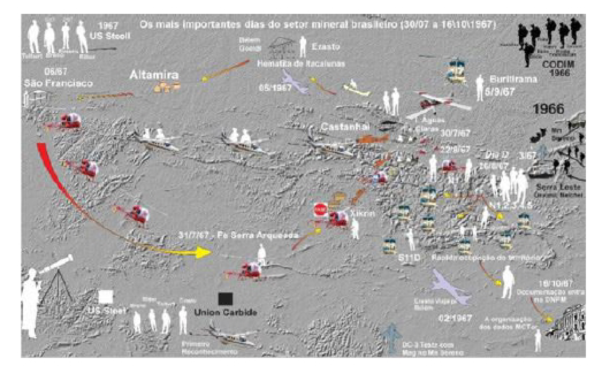

Meio Século de Exploração Mineral no Brasil - Parte 1

Resumo em Português
A primeira parte descreve o início da exploração mineral moderna no Brasil, destacando a descoberta da Província Mineral de Carajás como marco fundamental da mineração nacional. O texto contextualiza que, até meados da década de 1960, o país possuía baixa atratividade exploratória devido à falta de infraestrutura, capital privado e conhecimento geológico sistemático. Esse cenário começou a mudar com o Código de Mineração de 1967, que permitiu investimentos externos e redefiniu o subsolo como patrimônio da União, criando ambiente favorável à prospecção mineral. A narrativa concentra-se na disputa exploratória entre a US Steel e a Union Carbide pela região amazônica, demonstrando que a descoberta do ferro de Carajás foi resultado de planejamento técnico, estratégia logística e interpretação geológica, e não de acaso. O texto enfatiza o caráter heroico da exploração da época, marcada por campanhas longas na floresta, uso pioneiro de helicópteros e intensa dedicação dos geólogos. A atuação de profissionais como Gene Tolbert, Breno Santos, Erasto Boretti e João Ritter foi decisiva para identificar as anomalias geológicas que levaram à descoberta de aproximadamente 18 bilhões de toneladas de minério de ferro de alto teor. Além do ferro, o reconhecimento desse ambiente geológico abriu caminho para a futura identificação de depósitos de cobre, ouro, níquel e manganês, consolidando Carajás como uma das maiores províncias minerais do planeta.